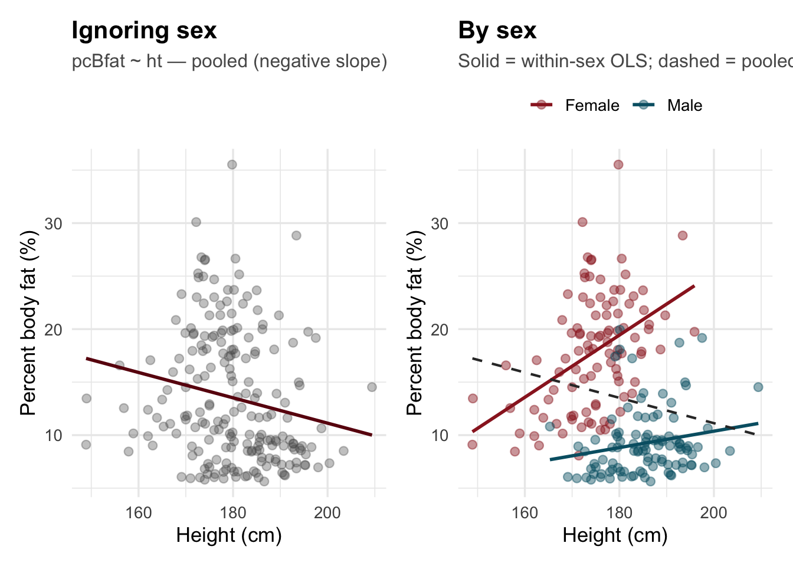
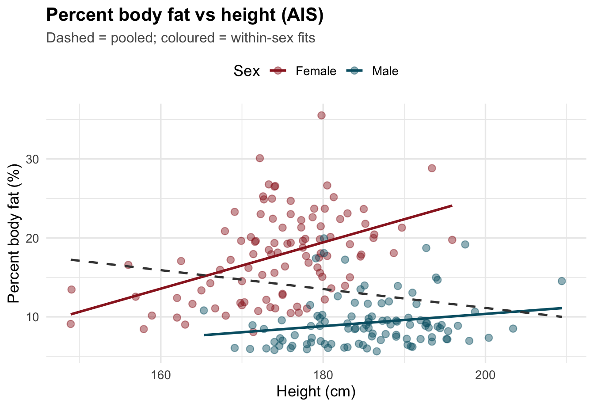
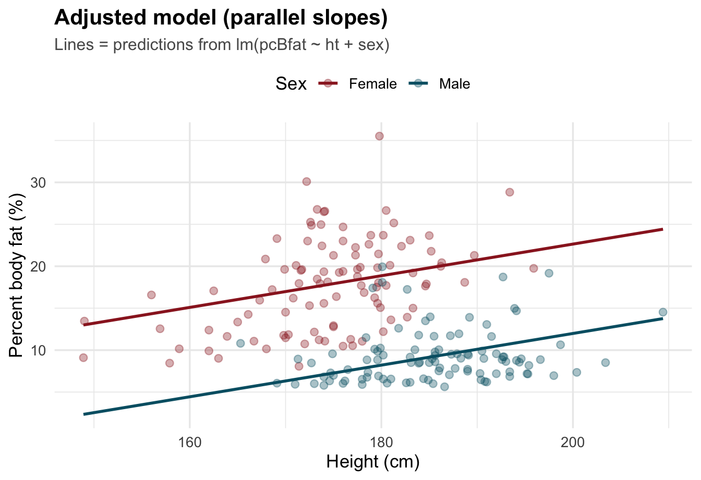

data(ais, package = "DAAG")
d <- ais |>
filter(!is.na(pcBfat), !is.na(ht), !is.na(sex)) |>
mutate(
sex = factor(sex, levels = c("f", "m"), labels = c("Female", "Male"))
)Simpson’s paradox: percent body fat vs height (AIS)
DAAG::ais — pooled slope can reverse after adjusting for sex
Question
In DAAG::ais, elite athletes:
Does height (
ht, cm) predict percent body fat (pcBfat)?
Pooled OLS often yields a negative slope: taller people in the combined sample tend to lower % body fat. That clashes with what you see within each sex: among women (and more weakly among men), taller athletes tend to carry more % fat along the spectrum of the cohort. Men are taller on average but much leaner on average, so pooling creates a classic sign reversal once you fit pcBfat ~ ht + sex.
Companion example (attenuation, not flip)
For no sign reversal—a strong pooled slope that shrinks toward zero after + sex—use confounding_ais_ferritin_wt.qmd (ferr ~ wt). Same dataset, different geometry.
Data
data(ais, package = "DAAG"). Complete cases: N = 202. See ?ais for units (ht is cm).
Reference: Maindonald & Braun, Data Analysis and Graphics Using R (DAAG).
Descriptive pattern
d |>
group_by(sex) |>
summarise(
n = n(),
mean_ht_cm = mean(ht),
sd_ht = sd(ht),
mean_pcBfat = mean(pcBfat),
sd_pcBfat = sd(pcBfat)
) |>
knitr::kable(digits = 2, caption = "Height and % body fat by sex (AIS)")| sex | n | mean_ht_cm | sd_ht | mean_pcBfat | sd_pcBfat |
|---|---|---|---|---|---|
| Female | 100 | 174.59 | 8.24 | 17.85 | 5.45 |
| Male | 102 | 185.51 | 7.90 | 9.25 | 3.18 |
Men are taller and leaner (% fat) on average—sex lines up with both ht and pcBfat in opposite directions across groups, which is exactly the setup for a marginal association that disagrees with within-sex trends.
Regression: bivariate vs adjusted
mod_bi <- lm(pcBfat ~ ht, data = d)
mod_adj <- lm(pcBfat ~ ht + sex, data = d)
bind_rows(
tidy(mod_bi) |> mutate(model = "Bivariate: pcBfat ~"),
tidy(mod_adj) |> mutate(model = "Adjusted: pcBfat ~")
) |>
filter(term %in% c("(Intercept)", "ht", "sexMale")) |>
transmute(model, term, estimate, std.error, statistic, p.value) |>
knitr::kable(digits = 4, caption = "Focus on the slope for `ht` (cm → % body fat)")| model | term | estimate | std.error | statistic | p.value |
|---|---|---|---|---|---|
| Bivariate: pcBfat ~ | (Intercept) | 35.0400 | 7.9650 | 4.3992 | 0.0000 |
| Bivariate: pcBfat ~ | ht | -0.1196 | 0.0442 | -2.7073 | 0.0074 |
| Adjusted: pcBfat ~ | (Intercept) | -15.1077 | 6.4304 | -2.3494 | 0.0198 |
| Adjusted: pcBfat ~ | ht | 0.1888 | 0.0368 | 5.1361 | 0.0000 |
| Adjusted: pcBfat ~ | sexMale | -10.6580 | 0.7138 | -14.9315 | 0.0000 |
After + sex, the slope on height is positive and substantial: holding sex fixed, taller athletes tend to higher % fat. The pooled line was negative because it absorbed the sex composition.
bind_rows(
tidy(lm(pcBfat ~ ht, data = filter(d, sex == "Female"))) |>
mutate(sex = "Female"),
tidy(lm(pcBfat ~ ht, data = filter(d, sex == "Male"))) |>
mutate(sex = "Male")
) |>
filter(term == "ht") |>
select(sex, estimate, std.error, statistic, p.value) |>
knitr::kable(digits = 4)| sex | estimate | std.error | statistic | p.value |
|---|---|---|---|---|
| Female | 0.2931 | 0.0599 | 4.8924 | 0.0000 |
| Male | 0.0775 | 0.0395 | 1.9604 | 0.0527 |
Scatterplots: pooled vs stratified
xlab <- "Height (cm)"
ylab <- "Percent body fat (%)"
p_pooled <- ggplot(d, aes(ht, pcBfat)) +
geom_point(alpha = 0.35, colour = "grey35", size = 2.2) +
geom_smooth(method = "lm", se = FALSE, colour = "#6a040f", linewidth = 1) +
labs(
title = "Ignoring sex",
subtitle = "pcBfat ~ ht — pooled (negative slope)",
x = xlab, y = ylab
)
pal <- c(Female = "#9b2226", Male = "#005f73")
p_strat <- ggplot(d, aes(ht, pcBfat, colour = sex)) +
geom_point(alpha = 0.45, size = 2.2) +
geom_smooth(method = "lm", se = FALSE, linewidth = 1, aes(colour = sex)) +
geom_smooth(
method = "lm", se = FALSE,
aes(group = 1), colour = "grey20",
linetype = "dashed", linewidth = 0.75, inherit.aes = TRUE
) +
scale_colour_manual(values = pal, name = NULL) +
labs(
title = "By sex",
subtitle = "Solid = within-sex OLS; dashed = pooled line",
x = xlab, y = ylab
)
p_pooled + p_strat + plot_layout(widths = c(1, 1))
ggplot(d, aes(ht, pcBfat, colour = sex)) +
geom_point(alpha = 0.45, size = 2.5) +
geom_smooth(method = "lm", se = FALSE, linewidth = 1, aes(colour = sex)) +
geom_smooth(
method = "lm", se = FALSE,
aes(group = 1), colour = "grey25",
linetype = "dashed", linewidth = 0.9, inherit.aes = TRUE
) +
scale_colour_manual(values = pal, name = "Sex") +
labs(
title = "Percent body fat vs height (AIS)",
subtitle = "Dashed = pooled; coloured = within-sex fits",
x = xlab, y = ylab
)
Adjusted model: parallel slopes
ht_seq <- seq(min(d$ht), max(d$ht), length.out = 80)
d_pred <- expand.grid(ht = ht_seq, sex = levels(d$sex), stringsAsFactors = FALSE)
d_pred$sex <- factor(d_pred$sex, levels = levels(d$sex))
d_pred$fit <- predict(mod_adj, newdata = d_pred)
ggplot(d, aes(ht, pcBfat, colour = sex)) +
geom_point(alpha = 0.35, size = 2.2) +
geom_line(data = d_pred, aes(y = fit, colour = sex), linewidth = 1) +
scale_colour_manual(values = pal, name = "Sex") +
labs(
title = "Adjusted model (parallel slopes)",
subtitle = "Lines = predictions from lm(pcBfat ~ ht + sex)",
x = xlab, y = ylab
)
Take-home
- Sign flips in real data mean the pooled association is a bad summary when a binary like sex shifts both
XandY. lm(Y ~ X + sex)estimates the slope ofXat fixed sex—here it recovers a positive height effect that was hidden in the marginal scatter.- Athletes are a selected sample; this is for methods and visual intuition.
Install
If needed: install.packages("DAAG") and install.packages("patchwork").